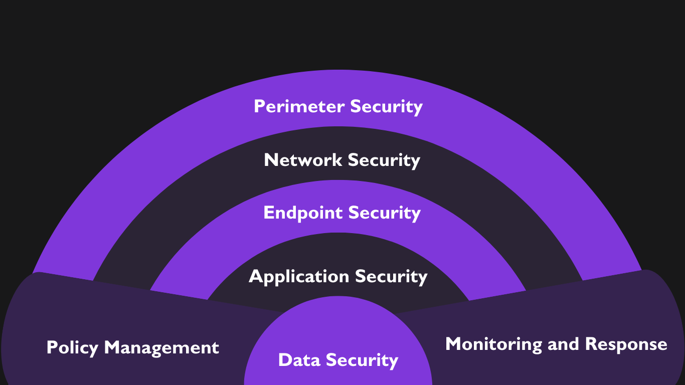

Defensive Security

Defense-in-depth
Defense in depth is a cybersecurity concept which means multiple layers of cybersecurity. It involves applying security protocols at multiple layers around an IT infrastructure. The objective of defense in depth is to ensure that if one of the protocol or measure fails, there are still other ones to compliment. A real-life analogy would be a castle. There would be a king sleeping in a room within the castle. To protect him, there is a secure room with guards on the door. The room would be within a building with strong brick-walls. The main door of the building will have locks and also guarded by guards. The building will be surrounded by fence and there will be guards in the entrance there too. There will also be watch gates and other security measures. Defense in depth has similar concept. It has different tools and techniques covering network, application, endpoint and even social aspects.

Attack Surface: The target in a cyber-attack is called attack surface. It is the things that are vulnerable to cyber-attack. For example, company website, employee portal, email accounts, passwords, etc. These are the possible vectors from which an adversary can extract information. The attack surface covers defense points like data, devices, applications, networks and systems. Attack surface is critical in cybersecurity because it identifies the possible points of cyber-attack in an organization.
Methods of technical defense
Anti-malware
It is the software that can protect a computer system against malwares. Malwares have signature which are its unique features like its file size, file type, extension, data usage pattern, methods of operation, etc. An anti-malware software can detect this pattern and recognize malware. Then, it moves the malicious file to a location where it cannot execute and is basically not functional at all. It then notifies the user and takes action.
IDS and IPS
IDS (Intrusion Detection System) detects any malicious activity in a system or network, and alerts. It doesn’t affect network performance. IPS (Intrusion Prevention System) detects and also performs actions to prevent such malicious activity. It affects network performance as there will be delay in IPS processing.
Firewall
Firewalls are located at the edge of a network. Its job is to filter incoming and outgoing network traffic. At early times, firewalls used to filter data packets. So, it could not protect against data spoofing. Firewalls can also include IDS and IPS. A firewall may be software or hardware and can be placed in different ways.
- Network firewalls: They are placed between a computer system or a network, and the internet. They protect the entire system or the network.
- Host-based firewalls: They are placed in hosts, i.e. endpoints (computer, mobile devices, etc.). They protect the specific endpoint they are placed on.
- Cloud-based firewalls: They are the firewalls offered as a service by Cloud Service Providers. So, they are also known as Firewall-as-a-Service (FaaS). Instead of being a hardware or software, they are hosted on cloud. The benefits of using cloud firewall is that it is scalable according to the organization needs, accessible from anywhere and doesn’t require maintenance costs.
On the basis of filtering methods, firewalls are of different types:
- Packet Filtering firewalls: These firewalls have some pre-defined rules. They check each data packet’s header (source IP, destination IP, port, protocol, etc) and based on the rules they allow and block those packets. They are fast but cannot detect malicious payload.
- Stateful Inspection firewalls: While packet filtering firewalls inspect each data packet, these firewalls check active connections and allow or block packets based on the context. It is more secure than a packet filtering firewall.
- Proxy firewalls: They are located in the application layer and act as an intermediary between user device and the internet. As HTTP is an application-level protocol and is insecure, it is the job of proxy firewalls to filter the HTTP traffic.
- Next Generation Firewall: It is an advanced firewall which is the combination of other firewalls. It can have multiple features like packet filtering, stateful inspection, protecting application layers, detecting and preventing intrusions, etc. It provides high security but is costly.
Encryption and Cryptography
Cryptography is the process of translating information into secure format. It is the art of creating codes using encryption and decryption. Encryption is a part of cryptography. It is the process where information is hidden using certain algorithms.
| Cryptography | Encryption |
|---|---|
| It secures data using mathematical techniques. | It converts data into unreadable format. |
| It is a broader concept. | It falls under cryptography. |
| It ensures confidentiality and integrity of information. | It ensures confidentiality of information. |
| Encrpytion, hasing, digital signatures, etc. fall under cryptography. | There are two types of encryption, Symmetric (example, AES) and Unsymmetric (example, RSA). |
| Examples, SSL/TLS, Blockchain. | Example, File encryption using AES. |
Proxy servers
Proxy servers are the middle-man between the computer and the internet. When a computer makes a request, the proxy sends the request to the internet, and when the internet sends back a response, the proxy sends it to the device. A proxy has security features as well. It hides the original IP address of the device masking with the proxy IP address. It also prevents direct access to the internet thus making it difficult for the attacker to gain access to the device.
EDR (Endpoint Detection and Response)
EDR is a tool that monitors endpoints (computer, mobile phones, servers, etc.) for any cyber threats and responds to those threats. It detects any abnormal behavior in those endpoints. It also responds to those threats in various ways, such as isolating the system after a threat is detected. An antimalware is signature-based but an EDR is behavioral-based, so it is more effective than antimalware in detecting advanced cyber threats.
Identity and Access Control
It is a cybersecurity framework that is designed to ensure only the authorized people can access system and data in an organization. It ensures that authorized people can access authorized resources at authorized time.
Access Control has four key mechanisms (IAAA):
- Identification: It refers to proving identity. It proves the user of the system. For example, typing username or ID card to access a system.
- Authentication: It involves verifying the identity. The main objective of authentication is to prove
that the user
proving the identity is valid. There are various authentication factors:
- Knowledge: Password, PIN, Passphrase
- Possession: ID, cards, smart card
- Inherence: Biometrics
- Authorization: It involves the things that the user is allowed to do. It refers to permission. Once you are logged in, authorization means to check what files the user is allowed to access. For example, an accountant may be authorized to only work with spreadsheet files from a computer.
- Accountability: Accountability means responsibility. It ensures that authenticated people do authorized activity. System log record information which can be used to check accountability of a personnel.
Access Control can be classified into four different models:
- Mandatory Access Controls (MACs): In this model, the access controls are defined by a central authority. The access is based on the policies defined by the authority. For example, in the military system, data is classified as Confidential, Secret or Top secret.
- Discretionary Access Control (DAC): In this model, the owner of the resources determines the access to the resources. Example, a user folder where the administrator privilege belongs to only the user.
- Role Based Access Control (RBAC): In this model, access is granted based on the personnel roles. The role or position determines the access rights. For example, an accountant only gets financial data, nothing else.
- Attribute Based Access Control (ABAC): In this model, the decision for access rights is determined based on various factors such as user identity, device, type, location, time of access and resource sensitivity. It is a highly flexible model. Example, allowing HR employees to access a particular computer in a particular room, which contains selective files only to work with for office hours only.
The key features of Identity and Access Control systems are:
- Authentication
- Role-based Access Control
- Principle of Least Privilege
- Regular Audits
- Directory services:Maintaining centralized repository of user identities
Defensive Security Practices
Passwords
One of the simplest yet most effective ways to protect your online accounts is to use strong, unique passwords. Avoid using easily guessable passwords. Instead, use a combination of letters, numbers, and symbols, and change your passwords regularly. You can use a password manager to store your passwords. Additionally, enable 2FA wherever possible to add an extra layer of security.
Up-to-date software
Software frequently releases updates to patch security vulnerabilities. Failing to update your software, operating system, or applications can leave you exposed to cyber threats. Turn on automatic updates to ensure you're always running the latest, most secure versions.
Network monitoring
Regularly monitor your network for unusual activity. Intrusion detection systems (IDS) and intrusion prevention systems (IPS) can help identify and block potential threats before they cause damage.
Firewalls
Firewalls act as a barrier between your internal network and the outside world, blocking malicious traffic from entering. Implement both software and hardware firewalls to ensure comprehensive protection. Firewalls help secure your devices and network from unauthorised access and potential cyberattacks.
Backups
In the event of a ransomware attack or data loss, having regular backups can save you from losing valuable information. Make sure to back up your data to secure, offsite storage to ensure it can be recovered in case of an attack.
Awareness
Human error is one of the biggest risks to cybersecurity. It is necessary to aware your friends and family about the potential cyber threats they can be exposed to and necessary defensive measures to implement.